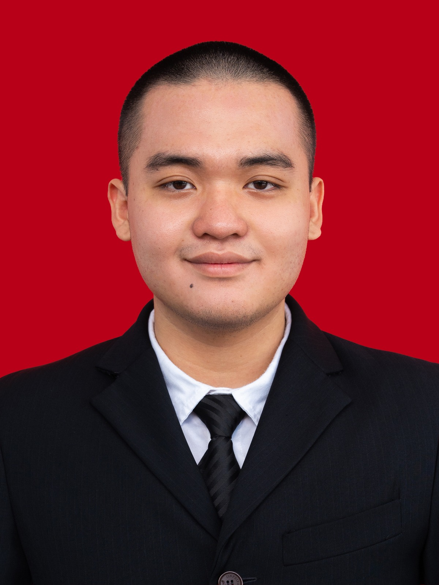

William Wongso
Batam (Asal: Dumai)
Halo! Perkenalkan nama saya William Wongso saya adalah mahasiswa Program Studi Sistem Informasi di Universitas Internasional Batam (UIB) yang memiliki ketertarikan pada teknologi, sistem informasi, dan pengembangan solusi digital. Berasal dari Dumai dan merupakan lulusan SMA Santo Tarcisius, William memiliki semangat untuk terus belajar, mengembangkan kemampuan, serta memanfaatkan teknologi untuk menciptakan solusi yang bermanfaat.
Selain bidang teknologi, William juga memiliki ketertarikan pada dunia bisnis dan pengembangan usaha. Dengan menggabungkan pengetahuan teknologi dan pemahaman bisnis, William ingin terus berkembang dan menghasilkan ide serta solusi yang inovatif.
Biodata Singkat
Nama Lengkap
William Wongso
Pendidikan Terakhir
SMA Santo Tarcisius
Asal
Dumai
Domisili
Batam
Kampus
Universitas Internasional Batam
Program Studi
Sistem Informasi
Visi & Misi
Menjadi pribadi yang kompeten, inovatif, dan mampu memanfaatkan teknologi untuk menciptakan solusi yang memberikan manfaat bagi masyarakat dan dunia bisnis.
🚀 Misi
- Terus meningkatkan kemampuan di bidang Sistem Informasi dan teknologi.
- Mengembangkan kemampuan berpikir kreatif dan pemecahan masalah.
- Menerapkan teknologi untuk menciptakan solusi yang efektif dan bermanfaat.
- Meningkatkan pengalaman melalui berbagai proyek dan kegiatan.
- Mengembangkan kemampuan komunikasi, kerja sama, dan profesionalisme.
- Menggabungkan teknologi dengan dunia bisnis untuk menciptakan peluang baru.
Core Values
Innovation
Selalu terbuka terhadap ide baru dan mencari cara yang lebih baik dalam menyelesaikan masalah.
Continuous Learning
Terus belajar dan mengembangkan kemampuan untuk menghadapi perkembangan teknologi.
Integrity
Menjunjung kejujuran, tanggung jawab, dan konsistensi dalam setiap tindakan.
Adaptability
Mampu beradaptasi dengan lingkungan, teknologi, dan tantangan baru.
Collaboration
Menghargai kerja sama dan kontribusi orang lain untuk mencapai tujuan bersama.
Growth
Berusaha untuk terus berkembang, baik secara akademik, profesional, maupun pribadi.